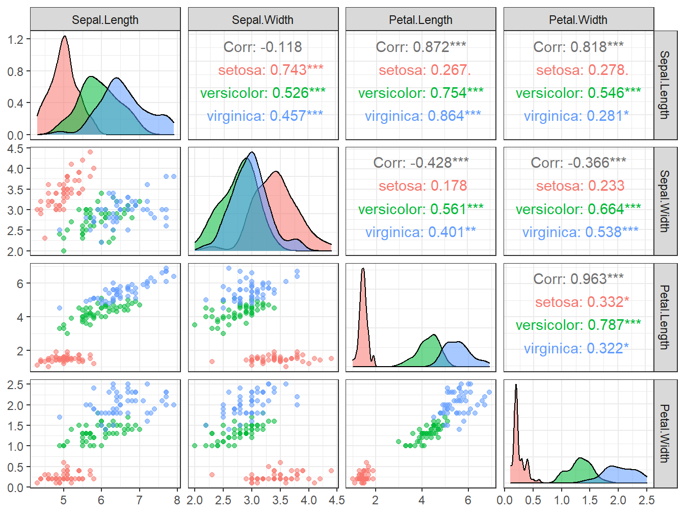

2.1 Clasificación con el paquete class
El problema inicial está relacionado con la clasificación de la especie de flor Iris—setosa, virginica y versicolor—a partir de mediciones sus pétalos y sépalos. Estos datos fueron recogidos por Ronald Fisher con el objetivo de cuantificar la variación morfológica de la flor. Actualmente están disponibles en diversas plataformas. En R es uno de los datos que vienen de base (iris).
En la Tabla 2.1 representamos una muestra del dataset, que en su totalidad consiste de 50 observaciones de cada una de las 3 especies. Como todo estudio, debemos comenzar por un análisis descriptivo de la muestra.
| Sepal.Length | Sepal.Width | Petal.Length | Petal.Width | Species |
|---|---|---|---|---|
| 5.1 | 3.5 | 1.4 | 0.2 | setosa |
| 4.9 | 3.0 | 1.4 | 0.2 | setosa |
| 4.7 | 3.2 | 1.3 | 0.2 | setosa |
| 4.6 | 3.1 | 1.5 | 0.2 | setosa |
| 5.0 | 3.6 | 1.4 | 0.2 | setosa |
| 5.4 | 3.9 | 1.7 | 0.4 | setosa |
| 4.6 | 3.4 | 1.4 | 0.3 | setosa |
| 5.0 | 3.4 | 1.5 | 0.2 | setosa |
| 4.4 | 2.9 | 1.4 | 0.2 | setosa |
| 4.9 | 3.1 | 1.5 | 0.1 | setosa |
Cargamos las librerías necesarias para llevar a cabo el estudio. Luego inspeccionamos los datos.
library(class)
library(ggplot2)
library(GGally)
df <- data(iris) # cargar datos
summary(iris) # un breve descriptivo## Sepal.Length Sepal.Width Petal.Length Petal.Width
## Min. :4.300 Min. :2.000 Min. :1.000 Min. :0.100
## 1st Qu.:5.100 1st Qu.:2.800 1st Qu.:1.600 1st Qu.:0.300
## Median :5.800 Median :3.000 Median :4.350 Median :1.300
## Mean :5.843 Mean :3.057 Mean :3.758 Mean :1.199
## 3rd Qu.:6.400 3rd Qu.:3.300 3rd Qu.:5.100 3rd Qu.:1.800
## Max. :7.900 Max. :4.400 Max. :6.900 Max. :2.500
## Species
## setosa :50
## versicolor:50
## virginica :50
##
##
## ##
## setosa versicolor virginica
## 0.3333333 0.3333333 0.3333333# visualización
ggpairs(iris, ggplot2::aes(colour = Species, alpha = 0.2), lower=list(combo=wrap("facethist",
bins=round(sqrt(50))))) + theme_light()
De estos análisis observamos, por ejemplo, que 2 de las 4 variables—Petal.Width y Petal.Length—parecen separar bastante bien las 3 especies, y que la muestra está muy bien balanceada.
Antes de pasar a ajustar nuestro modelo, debemos preprocesar la muestra. El algoritmo KNN es muy sensible a la escala de los datos, por ejemplo, podría favorecer distancias entre elementos con valores más grandes. Una forma sencilla de estandarizar o escalar los datos es usando:
Otro elemento importante es la validación del modelo que ajustemos: ¿cómo y con qué muestra medir la precisión? Por lo pronto, fijaremos aleatoriamente un 20% de los datos para calcular la tasa de error.
# set de índices para entrenar-validar (80% - 20%)
set.seed(123)
train.ID <- sample(1:nrow(iris), 0.8 * nrow(iris))
# matriz de diseño para entrenar
X.train <- iris.scl[train.ID,1:4]
# matriz de diseño para testear
X.test <- iris.scl[-train.ID,1:4]
# respuesta (categórica) entrenamiento
Y <- iris[train.ID,5]
# respuesta (categórica) test
Y.test <- iris[-train.ID,5]Usando la función knn podemos predecir las clases de los datos en X.test. Otro problema es cómo seleccionar la cantidad de vecinos k apropiada. Una regla de pulgar (thumb rule) es fijar \(k = \sqrt{n_{train}}\). Para analizar la precisión del modelo creamos la matriz de confusión y calculamos la tasa de error correspondiente para el conjunto de datos test.
# KNN
pr <- knn(X.train, X.test, cl=Y, k = round(sqrt(nrow(X.train))))
# matriz de confusión
tab <- table(pr,Y.test)| setosa | versicolor | virginica | |
|---|---|---|---|
| setosa | 10 | 0 | 0 |
| versicolor | 0 | 14 | 0 |
| virginica | 0 | 1 | 5 |
## [1] 0.03333333La tasa de error test es bastante baja, además indica que se clasifican bien el \(\approx 97\%\) de las observaciones. Veamos ahora qué pasa al variar el número de vecinos K.
test.error <- data.frame()
for (K in seq(1, 120, by = 5)) {
# KNN
pr <- knn(X.train,X.test,cl=Y,k=K)
# matriz de confusion
tab <- table(pr,Y.test)
# tasa de error test
test.error <- rbind(test.error,
data.frame(Tasa.Error = sum(pr != Y.test)/sum(tab), K))
}
ggplot(test.error, aes(x = K, y = Tasa.Error)) +
geom_point() +
geom_line() +
ylab("Tasa de Error (test)") + xlab("K: número de vecinos") +
theme_light()
Se representa la tasa de error al aumentar el número de vecinos. Los saltos de la curva son resultado del pequeño tamaño de la muestra test. Como cualquier otro modelo de machine learning, el interés está en seleccionar el nivel de flexibilidad (número de vecinos) que mejore la clasificación… inténtalo!